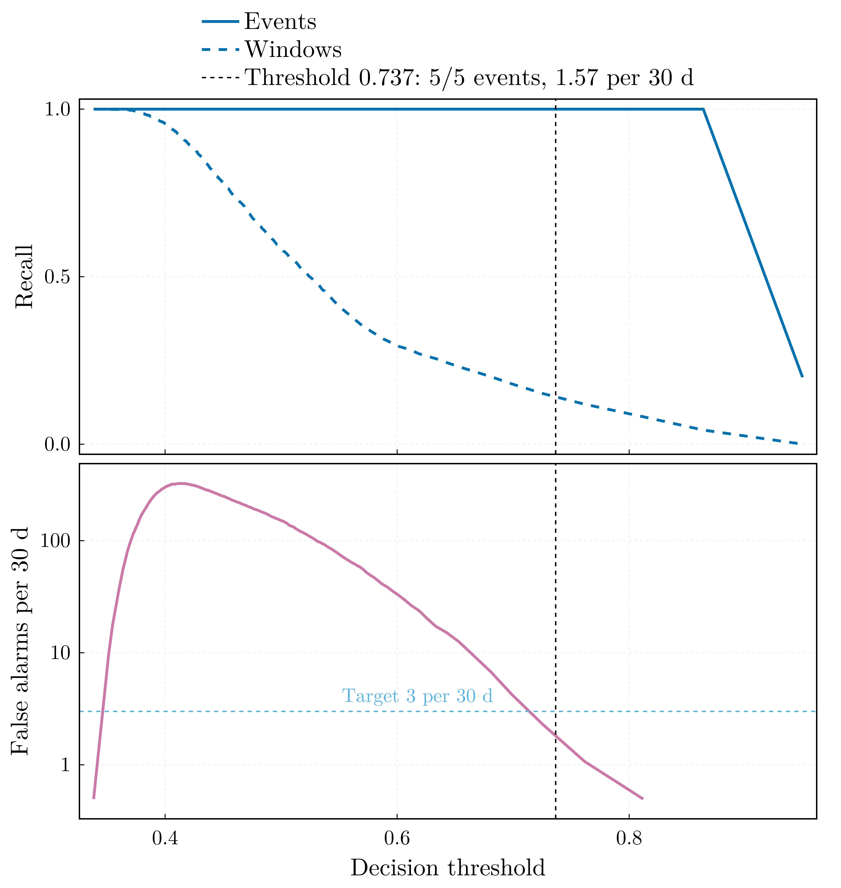
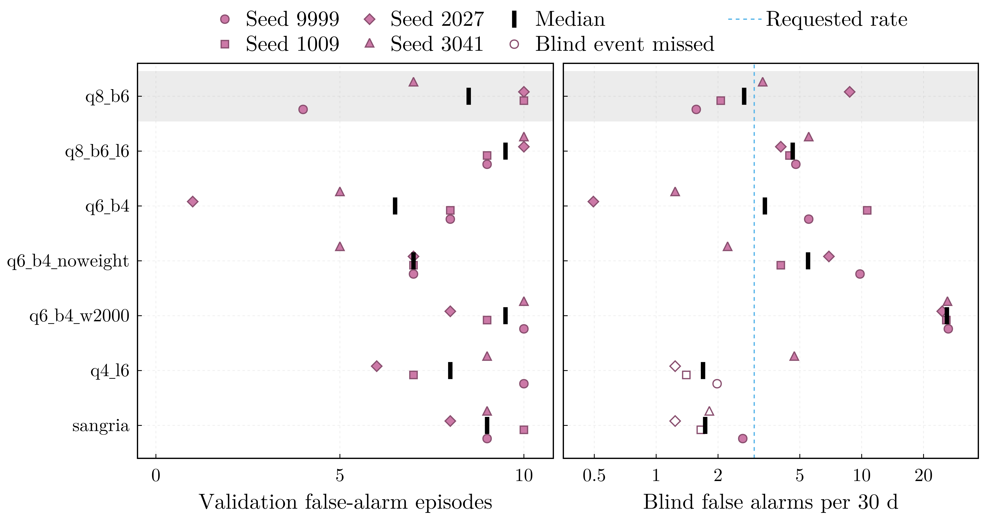
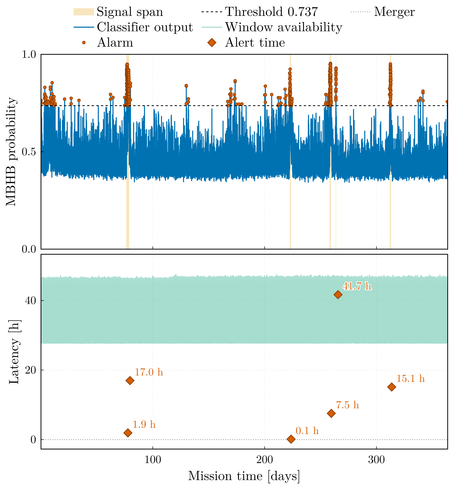
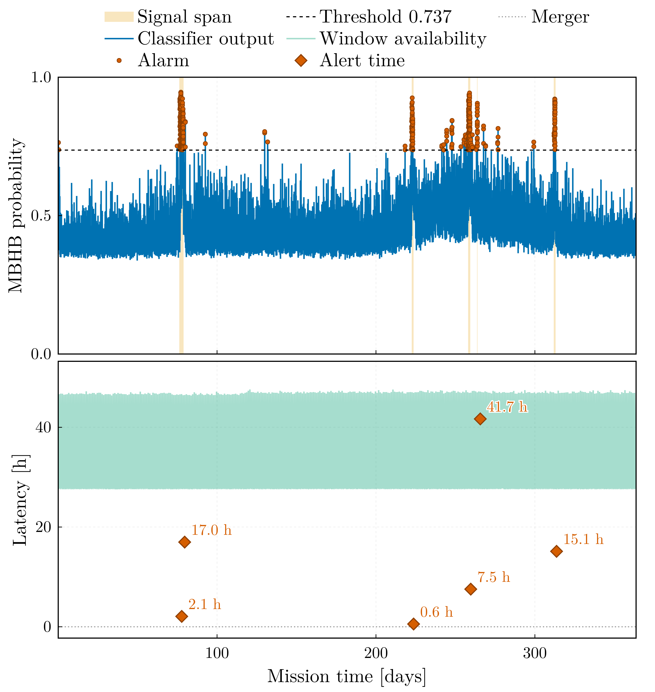
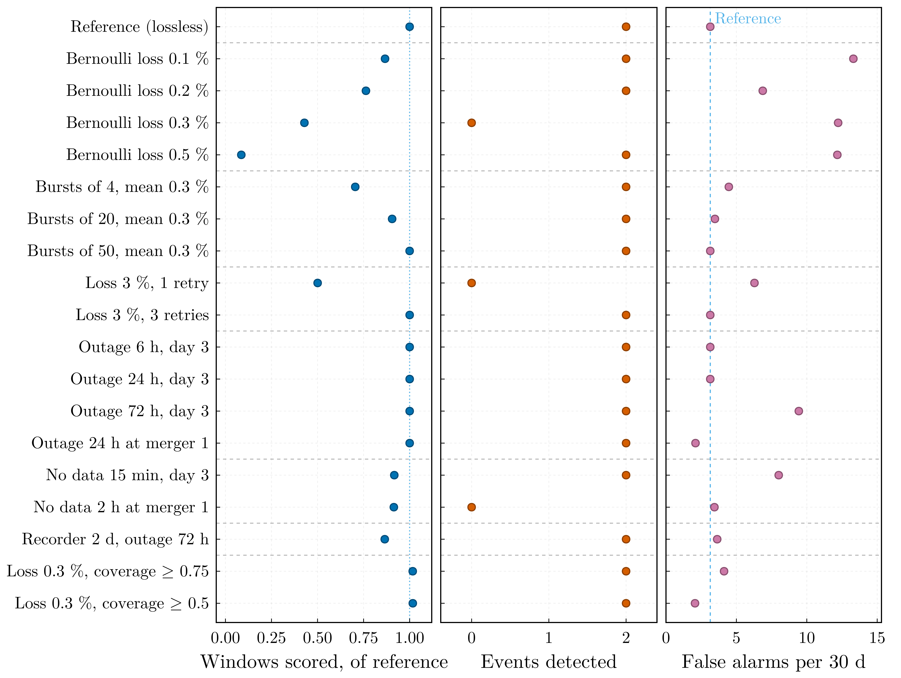
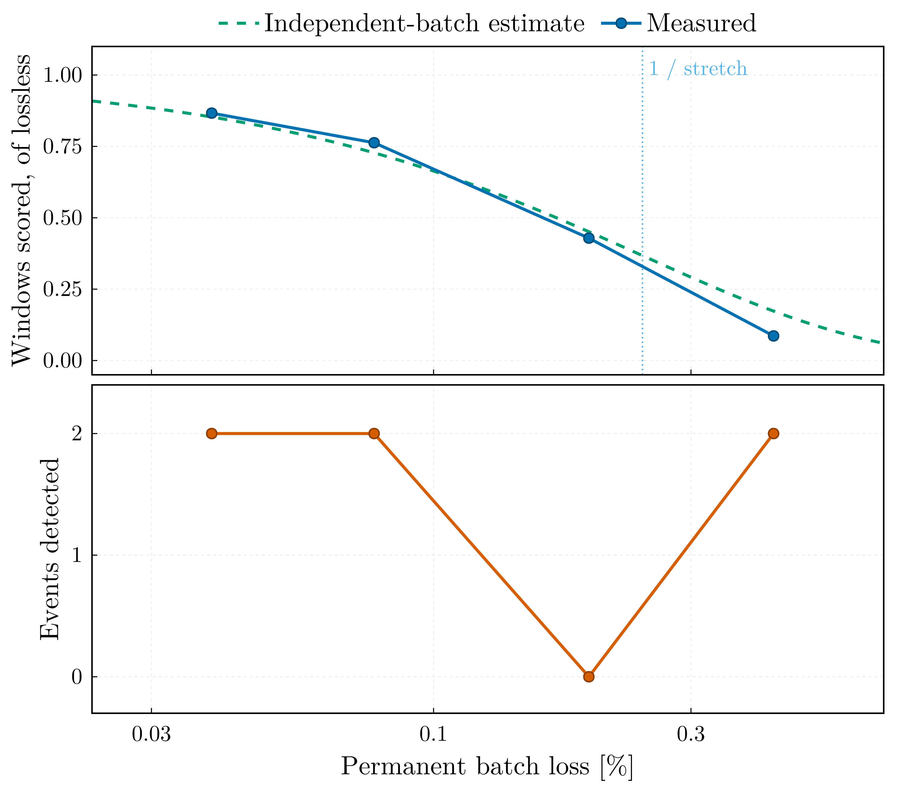
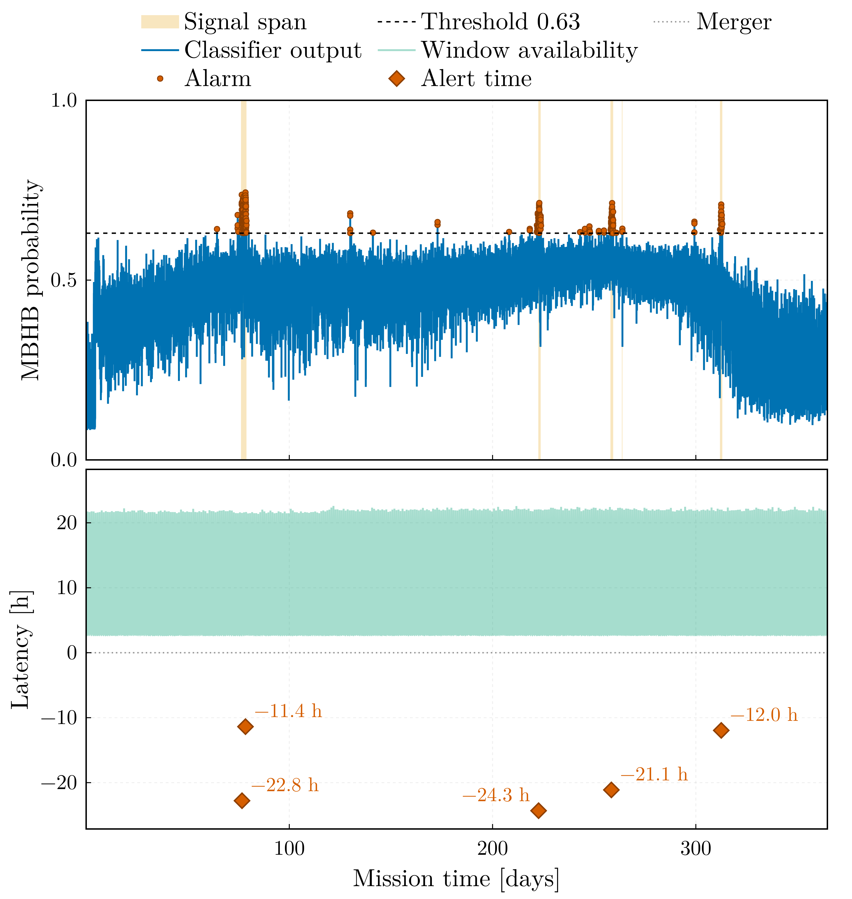

Sangria benchmark
This page reports the results of the classifier on the LISA Data Challenge 2a "Sangria" data set: one year of simulated LISA telemetry for training and a second, blind year for evaluation. The blind year is scored twice: as a completed record, and streamed through a simulated telemetry mission in which every window is scored once the data around it has reached the ground.
Selected configuration, q8_b6 | Streaming configuration, q8_b6_s001 | |
|---|---|---|
| Completed blind year: label spans, false alarms per 30 d | 5 of 5, 1.57 | 5 of 5, 2.97 |
| Streamed year, causal whitening: coalescences alerted before the merger | none; all six after it | 5 of 6 (6 of 6 at three further seeds) |
| Alert time at the ground station | 0.1 to 42 h after the merger | 11 to 24 h before |
| Streamed year: false alarms per 30 d | 0.99 | 0.49 (1.15 to 1.56 at the further seeds) |
| Conditioning lag of every alert | 1.16 days | 2.8 hours |
| Record scored at 0.43 % scattered batch loss | 9 % | 81 % |
The two generation-gap missions of the lossy-link study were recorded with a telemetry producer that misplaced the payload after the gap; they were regenerated and replayed, and the corrected rows are given in Effect of a lossy link.
The selected configuration, eight qubits, four re-uploading layers and six sub-mHz band powers, was chosen on the training year by a rule fixed before the blind year was scored. On the completed blind year it detects all five labelled events at 1.57 false-alarm episodes per 30 mission days (19 episodes over 364 days), from a decision threshold fitted on held-out data of the training year and applied without adjustment; the fit predicted 1.38, so the operating point transfers. Trained at four seeds, the configurations with four or six sub-mHz bands recover all five events in every run, the two-band ones in two of eight; apart from 2000-sample windows, their false-alarm rates do not differ beyond the scatter between seeds, which for the selected configuration spans 1.57 to 8.74 per 30 days.
The completed record is whitened by its full-record PSD, the median Welch estimate of the entire blind year: a label-free statistic, admissible for a completed record but available only after the whole record has been received. The streamed results are therefore quoted under causal whitening, in which the PSD is estimated only from data already delivered to the ground station; the stream whitened by the full-record PSD is reported beside it as an upper reference.
Smoothing the Welch estimate in log-frequency shortens the kernel of the whitening filter and with it the stretch of data every window needs. The model retrained on smoothed features, q8_b6_s001, is the streaming configuration: at each of four initialisation seeds it alerts five or six of the six coalescences before their merger in the causal stream, and it keeps scoring on a link that loses data. An alert is credited to a coalescence only from its signal onset, the first window in which its signal reaches a matched-filter SNR of 5; release 1.2.0 credited the whole four-day label span, and the correction is given under Telemetry replay and alert latency. Every run on this page encodes its features on the half period $[0, \pi]$ of the $R_z$ gate (see the encoding paragraph of the protocol).
Data and labels
LDC2a Sangria provides two one-year records of TDI $X$, $Y$, $Z$ at 0.2 Hz: a training product with its source catalogue and truth streams, and a blind product whose MBHB catalogue is released separately. Both are read natively (read_tdi, read_catalog) and reduced to the noise-orthogonal A channel, $A = (Z - X)/\sqrt{2}$ (tdi_to_aet).
Labels come from the truth stream rather than from the classifier's own notion of a detection (label_truth_stream). A merger is a peak of the windowed matched-filter SNR against the analytic Sangria TDI PSD, separated from its neighbours by at least a day and reaching SNR 8; a window is labelled positive when it overlaps the fixed span of four days before to 27 minutes after a coalescence. The training year carries 13 such events and the blind year 6 coalescences that merge into 5 labelled runs, two of them falling within a day of each other.
The first and last ten window lengths of each record are dropped (edge_margin), because the circular high-pass and whitening filters ring there; 62,863 windows of 1000 samples at a stride of 100 remain, covering 363.8 days.
Features are the mean whitened power in six bands whose edges rise from 0.3 mHz, together with the spectral entropy and the log power spread — eight numbers, one per qubit (feature_set = "bands"). The whitening PSD is a Welch estimate of the record being processed.
Protocol
The interpretation of the results depends on the evaluation protocol, which is therefore stated in full.
Blocks. Windows overlap by 90 %, so any random split would place copies of the same signal in both partitions. The training year is cut chronologically into training (70 %), validation (15 %) and test (15 %) blocks separated by one window length (chronological_split). The feature scaler is fitted on the training block alone, early stopping runs on the validation block, and the decision threshold is fitted on validation and test pooled — the held-out block, 109 days (threshold_block = "held_out", the opt-in the Sangria configurations declare; the package default is the validation block). The blind year enters twice: label-free, through the Welch estimate that whitens it, and at evaluation, where every model is scored once.
Threshold. The far criterion places the operating point of an alert trigger: among the candidates whose false-alarm episode rate does not exceed target_far_per_30d (3 per 30 days) and whose alarm duty cycle does not exceed target_fpr (5 %), it takes the lowest of the admissible range that starts at the highest threshold. The scan runs downwards because the episode count is not monotone: as the threshold falls, spurious episodes first increase in number and then merge into one continuously raised alarm that is counted as a few long episodes, which an upward scan would accept.
Rationale for the pooled block. The fitted rate rests on a Poisson count of the alarm episodes in its block, so its relative error is the inverse square root of that count. Across the grid below, four to ten episodes are counted on a 55-day validation block, which is insufficient to determine a rate. Pooling validation with test doubles the exposure. Pooling does not leak information into the model — the test block is scored once after training and enters neither model selection nor early stopping — but it removes the independence of the test block: its operating-point metrics are then in-sample, and the only independent check of the operating point is the blind year. For this reason the package default is the validation block alone (threshold_block = "validation") and the pooled block is an opt-in for records that come with a separate blind product, as this one does.
Selection. The selected configuration and seed were determined on the training year by a rule fixed before any blind score existed: the false-alarm episode count at the fitted threshold on the validation block, with every event of the block recovered as a constraint; counts within one Poisson standard deviation of each other are ties, broken by the validation ROC area and then by the smaller circuit. The blind year is then scored once per model and every model is reported, whatever its blind rank.
Metrics. An event is a contiguous run of positive labels and counts as detected when any window inside it alarms. A false-alarm episode is a contiguous run of alarmed windows outside every labelled span, and the operational rate is episodes per 30 mission days. Window-level precision, recall and ROC area are reported too, but the event-level pair defines the operating point.
Encoding. Every run on this page maps its features onto $[0, \pi]$ before the $R_z$ encoding gate ([training] phase_span = 1.0). On the full period $[0, 2\pi]$, $R_z(2\pi) = -I$ is a global phase, so a feature clamped at the upper scaler bound is encoded exactly as one at the lower bound, and by continuity the response returns to its floor value as a feature approaches the bound. At the coalescence itself the band powers exceed the scaler bound by two to three orders of magnitude, and under the full period five of the six blind coalescences scored below the threshold in the six-hour bin holding the merger. Measured with the retrained model, from the persisted model and feature table, in that same bin:
| Event | Merger-window SNR | Features at the upper bound (mean per window) | Peak band power / scaler upper bound | Peak score, $[0, 2\pi]$ model (threshold 0.826) | Peak score, $[0, \pi]$ model (threshold 0.737) |
|---|---|---|---|---|---|
| 1 | 598 | 1.1 | 129 | 0.738 | 0.852 |
| 2 | 690 | 1.1 | 106 | 0.708 | 0.795 |
| 3 | 1312 | 2.7 | 788 | 0.682 | 0.703 |
| 4 | 799 | 1.2 | 158 | 0.764 | 0.849 |
| 5 | 272 | 0.9 | 109 | 0.861 | 0.913 |
| 6 | 723 | 1.2 | 193 | 0.585 | 0.730 |
The half period raises the score in the merger bin above the threshold for four of the six coalescences. The two that remain below are the two most saturated: event 3, the coalescence with the highest SNR, has on average 2.7 of its six band powers clamped at the bound in that bin, and event 6 has 1.2. A clamped feature is now a state distinct from the floor, but every clamped feature is the same state whatever its magnitude, and a window with several bands clamped simultaneously is a pattern of which the training year contains few examples. The scores still peak 12 to 30 hours before the merger (0.91 to 0.95 for every event), where the band powers lie at 0.4 to 0.8 of the bound: the classifier remains a detector of intermediate sub-mHz excess, with a merger response that is now mostly, but not entirely, above the threshold.
Results
Ten runs were trained on the same training year with the same protocol and evaluated once on the blind year, with the threshold carried over unchanged. The validation column is the selection statistic; the blind columns were computed after the selection was recorded.
| Run | Qubits × layers, features | Epochs | Threshold | Validation episodes | Blind events | Blind FA / 30 d | Blind AUC |
|---|---|---|---|---|---|---|---|
sangria_pi | 4 × 4, 2 bands | 37 | 0.816 | 9 | 5 / 5 | 2.64 | 0.8101 |
q4_l6_pi | 4 × 6, 2 bands | 37 | 0.844 | 10 | 4 / 5 | 1.98 | 0.8139 |
q6_b4_pi | 6 × 4, 4 bands | 24 | 0.765 | 8 | 5 / 5 | 5.53 | 0.7919 |
q6_b4_noweight_pi | 6 × 4, 4 bands, unweighted loss | 50 | 0.426 | 7 | 5 / 5 | 9.81 | 0.8115 |
q6_b4_w2000_pi | 6 × 4, 4 bands, 2000-sample windows | 36 | 0.618 | 10 | 5 / 5 | 26.39 | 0.8071 |
q8_b6_pi | 8 × 4, 6 bands | 30 | 0.737 | 4 | 5 / 5 | 1.57 | 0.8065 |
q8_b6_pi_s1009 | 8 × 4, 6 bands, seed 1009 | 20 | 0.740 | 10 | 5 / 5 | 2.06 | 0.8110 |
q8_b6_pi_s2027 | 8 × 4, 6 bands, seed 2027 | 36 | 0.643 | 10 | 5 / 5 | 8.74 | 0.8274 |
q8_b6_pi_s3041 | 8 × 4, 6 bands, seed 3041 | 29 | 0.764 | 7 | 5 / 5 | 3.30 | 0.8129 |
q8_b6_l6_pi | 8 × 6, 6 bands | 50 | 0.716 | 9 | 5 / 5 | 4.78 | 0.8268 |
Every run but one recovers all five label spans; under the full-period encoding the two-band four-qubit baseline recovered three of them, and it now recovers five at 2.64 per 30 days. Four runs meet the three-per-30-days target on the blind year: q8_b6_pi, its seed 1009, sangria_pi, and q4_l6_pi, which misses an event. The selection rule chose q8_b6_pi with four validation episodes against seven for the second-ranked run, a difference of three, outside the tie band of two; it is also the best operating point on the blind year, an agreement that is observed here and not guaranteed by the rule. The same configuration under the full period delivered 2.47 at a ROC area of 0.793; the retrained one delivers 1.57 at 0.807, with a threshold that moved from 0.826 to 0.737.

The trace of q8_b6_pi over the blind year shows the annual variation of the noise score against which the threshold is set. The bulk of the noise score rises between day 200 and day 300 and falls back by day 350 — the Galactic foreground seen through the constellation's rotating antenna pattern — while the five labelled spans (beige) carry the peaks that clear the threshold. The threshold is effective because it lies above the annual excursion, not because the events are of high amplitude in absolute terms.

The operating characteristic of the blind year, computed post hoc: event recall remains 1 over the whole range up to the fitted threshold, so the operating point is limited by the false-alarm rate alone, and the fit — made on the training year, without access to this curve — placed it with a margin on the admissible side of the point at which the rate crosses the target.
What the table shows
Ordering the same runs by ROC area inverts the ranking. The selected model is ninth of ten by area and first by operating point; the run with the largest area, seed 2027 of the same configuration, delivers 8.74 false alarms per 30 days:
| Run | Blind AUC | Fitted threshold | Blind FA / 30 d |
|---|---|---|---|
q8_b6_pi_s2027 | 0.8274 | 0.643 | 8.74 |
q8_b6_l6_pi | 0.8268 | 0.716 | 4.78 |
q4_l6_pi | 0.8139 | 0.844 | 1.98 (4 / 5) |
q8_b6_pi_s3041 | 0.8129 | 0.764 | 3.30 |
q6_b4_noweight_pi | 0.8115 | 0.426 | 9.81 |
q8_b6_pi_s1009 | 0.8110 | 0.740 | 2.06 |
sangria_pi | 0.8101 | 0.816 | 2.64 |
q6_b4_w2000_pi | 0.8071 | 0.618 | 26.39 |
q8_b6_pi | 0.8065 | 0.737 | 1.57 |
q6_b4_pi | 0.7919 | 0.765 | 5.53 |
The reason is a property of the data, not of the classifier. The classifier's noise score is modulated over the year with a period of one year and the same phase in both records: the Galaxy sits at a fixed sky position, LISA's response to it is modulated by the constellation's rotation, and a single year-median Welch estimate whitens the record correctly only on average. The two years' noise distributions therefore agree only in the tail. The ratio of blind to training-year noise-window exceedance at a given score, for the two runs whose training-year scores were also computed, is:
| Model | 0.55 | 0.60 | 0.65 | 0.70 | 0.75 | 0.80 | 0.85 |
|---|---|---|---|---|---|---|---|
sangria_pi (threshold 0.816) | 1.60 | 1.90 | 2.02 | 1.74 | 1.10 | 0.70 | 0.54 |
q8_b6_pi (threshold 0.737) | 1.51 | 1.36 | 1.11 | 0.93 | 0.98 | 1.06 | — |
(—: no noise window of the blind year reaches that score.)
Below about 0.65 the blind year produces one and a half to two times as many noise exceedances as the training year; the threshold of the selected model lies at 0.737, where the ratio is within a few per cent of one, and its fitted rate transfers (1.38 predicted, 1.57 delivered). The ratio of the two-band baseline crosses unity only above 0.75, and its threshold lies at 0.816, in the region where the blind year produces fewer noise exceedances than the training year, which is why its rate transfers as well. A model whose threshold falls in the shoulder delivers its fitted rate multiplied by roughly the factor by which the two years disagree there. The ROC area is a rank statistic over the whole distribution and is insensitive to where the tail ends, which is why it favours the runs with the worst operating points.
Six sub-mHz bands have two effects: they reduce the annual excursion of the noise tail and they raise the event peaks above it, so that the threshold can lie in the stable region. The mechanism is that a contrast between two band powers that are modulated together is invariant under the modulation, whereas a single wide band provides no contrast. The grid trained at four seeds, below, confirms the recall of the band partitions and shows that the rates of the configurations do not differ beyond the scatter between seeds. What does follow is the need for the check itself: an operating point measured on one observation record does not carry over to the next unless it lies where the noise tails of the two records agree, and a large ROC area does not substitute for verifying this.
The spread under re-initialisation
The selected configuration was trained at three further seeds inside the same grid, each refitting its own threshold on the pooled held-out block and applying it to the blind year without adjustment:
| Seed | Fitted threshold | Fit predicted | Delivered FA / 30 d | Events | AUC |
|---|---|---|---|---|---|
| 1009 | 0.7398 | 2.750 | 2.062 | 5 of 5 | 0.8110 |
| 2027 | 0.6432 | 2.750 | 8.741 | 5 of 5 | 0.8274 |
| 3041 | 0.7637 | 2.475 | 3.299 | 5 of 5 | 0.8129 |
| 9999 (selected) | 0.7366 | 1.375 | 1.567 | 5 of 5 | 0.8065 |

Every realisation recovers all five events; two of the four remain below the three per 30 days that the criterion requested. The quantity that varies is the false-alarm rate, by a factor of five and a half from 1.57 to 8.74, while the ROC area varies by two and a half per cent, in the opposite direction: the seed with the largest area has the worst operating point. The outlier is the seed with the lowest fitted threshold, 0.643, which lies in the shoulder where the noise tails of the two years disagree. This is the finding of the model grid, now measured within one configuration rather than across several: the area under the curve is nearly insensitive to the rate delivered at the operating point, because the threshold lies in the tail and the area is dominated by the bulk of the distribution.
The principal result should therefore be read as an event recall that is stable and a false-alarm rate that carries a factor-of-several uncertainty from initialisation alone, in addition to the Poisson uncertainty of the episodes themselves. The selected seed was chosen on the training year, where it is also the best of the four (four validation episodes against seven and ten); that the ranking held on the blind year constitutes a single observation. Four realisations do not measure a distribution; they constrain the scatter sufficiently to show that a threshold fitted in the shoulder does not transfer, irrespective of the seed that produced it.
The grid over four seeds
Every other configuration of the grid was then trained at the same three further seeds, each run refitting its own threshold on the pooled held-out block, 28 runs in all:
| Configuration | Validation episodes, median (range) | Blind false alarms / 30 d, median (range) | Runs with 5 of 5 events |
|---|---|---|---|
q8_b6 (selected) | 8.5 (4 to 10) | 2.68 (1.57 to 8.74) | 4 of 4 |
q8_b6_l6 | 9.5 (9 to 10) | 4.62 (4.04 to 5.53) | 4 of 4 |
q6_b4 | 6.5 (1 to 8) | 3.38 (0.49 to 10.64) | 4 of 4 |
q6_b4_noweight | 7.0 (5 to 7) | 5.48 (2.23 to 9.81) | 4 of 4 |
q6_b4_w2000 | 9.5 (8 to 10) | 25.98 (24.66 to 26.39) | 4 of 4 |
q4_l6 | 8.0 (6 to 10) | 1.69 (1.24 to 4.70) | 1 of 4 |
sangria | 9.0 (8 to 10) | 1.73 (1.24 to 2.64) | 1 of 4 |

Three results follow. The partition of the spectrum decides the recall: the configurations with four or six sub-mHz bands recover all five events in all 20 of their runs, the two-band configurations in 2 of their 8 runs, 33 of 40 events. The false-alarm rate differs between configurations only through the 2000-sample windows: over all seven the Kruskal–Wallis statistic of the blind log rates is 15.0 (permutation $p = 0.006$), but q6_b4_w2000 delivers about 26 episodes per 30 days at every seed, and without it the rates do not differ beyond the scatter between seeds ($p = 0.23$; among the four band configurations that always recover five events, $p = 0.76$). The selection statistic cannot rank the configurations: applied seed by seed, the rule selects q8_b6 at seeds 9999 and 3041, q6_b4 at seed 2027 (0.49 per 30 days on the blind year) and q6_b4_w2000 at seed 1009 (25.8), where four configurations tie on validation episodes and the tie-break by validation ROC area chooses the worst operating point, as the inversion of ROC area and operating point above predicts. The validation block counts 1 to 10 episodes per run, and those counts differ between configurations only marginally ($p = 0.04$).
The selected run therefore owes its 1.57 per 30 days to its configuration and its seed together. The configuration recovers every event at every seed with a median of 2.68, the lowest median among the configurations that always recover five events, but not distinguishable from q6_b4 on four seeds each. The tables are built by alert_latency-independent metrics of each run: the validation block of its training and the blind year of its inference.
Against the published method
Everything above uses whitened sub-mHz band powers, which the paper this pipeline follows does not: Isfan et al. [1] take the spectral entropy and the mean, standard deviation and maximum of the raw window periodogram, with no filtering and no whitening, on a four-qubit register. That configuration is provided as configs/sangria_paper.toml and was retrained on the same two years and the same encoding (sangria_paper_pi), so the published result can be compared against a reproduction of its own method rather than only against a different one.
Isfan et al. [1] report five of six blind mergers, the missed one being the lowest-SNR source. The retrained parity run recovers all five label spans, one of them by a margin of 0.002 in score; that span contains event 3, the highest-SNR merger of the blind year, at a merger-window SNR of 1312 against 272 for the lowest-SNR one:
| Span | Events 1+2 | Event 3 | Event 4 | Event 5 | Event 6 |
|---|---|---|---|---|---|
| Peak score, paper features | 0.626 | 0.559 | 0.652 | 0.595 | 0.729 |
| Peak score, band features | 0.949 | 0.930 | 0.944 | 0.913 | 0.923 |
| Threshold | 0.557 / 0.737 |
Under the paper's features the highest-SNR event peaks at 0.559 against a fitted threshold of 0.557: the raw periodogram moments saturate most strongly where the signal is strongest, and without whitening the feature scaler clamps them. Under band features the same event peaks at 0.930 against a threshold of 0.737. (Under the full-period encoding the parity run missed the lowest-SNR event instead, the event the paper also misses; the encoding moved the marginal case from the low-SNR end to the high-SNR end.)
The reproduction adds the quantity the paper does not report. The paper publishes no false-alarm rate, so "five of six" has no operating point attached to it. Fitted here by the same criterion as every other run in this document, the paper's feature set delivers 31.7 false-alarm episodes per 30 days — 385 episodes over the blind year, about one per day — against 1.57 for q8_b6_pi. Its calibration does not transfer either: the fit predicted 1.38 per 30 days and the blind year returned 31.7, a factor of 23, on a held-out block whose AUC is 0.561, close to the chance level.
| Paper features, 4 × 4 | Band features, 8 × 4 (q8_b6_pi) | |
|---|---|---|
| Trainable parameters | 32 | 64 |
| Events | 5 / 5 spans (one at a margin of 0.002) | 5 / 5 |
| False alarms / 30 d | 31.7 | 1.57 |
| Blind AUC | 0.666 | 0.807 |
| Held-out AUC | 0.561 | 0.702 |
The improvement therefore does not lie in the quantum classifier: the register and the ansatz perform the same function as before. The operating point results from the conditioning of the data. Whitening the record and partitioning the milliHertz decade into six bands reduces the false-alarm rate by a factor of twenty and raises the highest-SNR event from the edge of the threshold to well above it, at twice the parameter count the paper reports for its own circuit.
Against a classical baseline
A classical multilayer perceptron trained on the same challenge data, whose blind-year predictions I could score, detects all five blind label spans — all six coalescences — with no false-alarm episode, alarming on 698 of 6,307,190 samples (0.011 %) at a threshold of 0.5. It is a stronger result than this classifier achieves.
It is quoted, not reproduced. The numbers above come from scoring those predictions through this project's event protocol; the model was never retrained here. A reproduction would require an effort out of proportion to what it would settle: the preprocessing is a rolling Welch spectral entropy at unit stride (its preprocessing script; window 1000), which amounts to 6.3 million transforms for each of ten channel-years, and the spectral-entropy series for X, Y and Z were not available.
Inspection of its artifacts establishes the following:
- The model.
Flatten → Dense(128, relu) → Dense(128, relu) → Dropout(0.2) → Dense(1, sigmoid)over a 10 × 10 input — ten timesteps of ten features — has 29,569 parameters, against a few dozen for the variational circuit; the quantum model does not achieve the better detection result. - The inputs. Ten features: the raw projections X, Y, Z, A, E and the spectral entropy of each. Since
A = (Z − X)/√2andE = (X − 2Y + Z)/√6are computed from X, Y and Z in that same script, the five projections span a three-dimensional space: the input is redundant by construction rather than erroneous. The null channelT = (X + Y + Z)/√3, the standard instrumental-artifact monitor, appears only in a comment and is not used. - The scaling is not blind. Its prediction script fits a fresh
StandardScaleron the blind set rather than reusing the one fitted in training. It uses no labels and acts on the five raw projections only, but its effect is not negligible: between the two years the per-column means differ by 0.27 to 0.65 training standard deviations and the standard deviations themselves by up to 12 %.
This point applies symmetrically to both classifiers. The operating-point analysis above shows that the two observation years differ enough for a threshold carried between them to fall in a shoulder where their noise distributions disagree twofold; this year-to-year shift is the principal difficulty of the problem. Refitting the scaler on the blind year absorbs part of that shift, and so does the whitening of the variational classifier: its band powers are normalised by the full-record PSD of the blind year, band by band, which is likewise a label-free statistic of the record under evaluation, and whitening the blind year with the estimate of the training year instead yields no detection (see the telemetry section). Both classifiers are therefore evaluated on a record renormalised towards the one they trained on, by different means; the feature scaler of the variational classifier, fitted on the training year, is the one statistic carried across unchanged. The contribution of the refit to the zero false-alarm rate cannot be determined from the released files, and for this reason the comparison is indicative rather than decided.
The VQC has 8 qubits and 4 re-uploading layers and 64 parameters against the 29,569 of the perceptron (a ratio of 460), and it uses one projection against five and eight features against ten.

The window-level ROC of q8_b6_pi on the blind year is shown for completeness and should be read with the warning above: at 0.807 it is the ninth best of the ten runs and the one that transfers. The operating point lies at a false-positive rate of a few $10^{-4}$, in the corner of this plot where the curve has almost no resolution, which is why the area under it is not an adequate summary.
Telemetry replay and alert latency
The benchmark above scores a finished record. The package also couples to a telemetry producer (see Telemetry Coupling), replaying a year-long mission with a realistic downlink: daily ground-station passes, 1 % packet loss with retransmission, and an on-board recorder. Windows are scored as their data arrives and alerts are timed against the true coalescences.
Two findings from this replay limit the contribution of this pipeline to a low-latency alert chain; both are properties of the conditioning rather than of the classifier:
The whitening is zero-phase, so it is not causal. A window's conditioned features depend on the data after it as much as on the data before it. A detector that scores each window as soon as its own samples have been received detects two of the five blind events; sixty-four window lengths of past context do not remedy this. The batch result is restored by centring the window in the stretch that is whitened around it, its conditioning stretch: twenty window lengths on each side reproduce the batch scores at a rank correlation of 0.997, whereas thirty-two before and twenty after reach 0.860. An alert therefore carries a conditioning lag of twenty window lengths, 1.16 days at these settings, before any ground-segment latency; the smoothed whitening of the section below shortens it to 2.8 hours.
The whitening PSD calibrates a record, not a model. Whitening the blind year with the PSD persisted from the training year removes every detection (none of five, at any context length), because the annually modulated foreground makes the noise of the two records differ. A streamed mission therefore has to estimate the PSD of the record it is scoring from the part of it that has reached the ground. The replay quoted here does so (psd_mode = "trailing", the setting of configs/experiments/q8_b6.toml): each window is whitened by the median Welch estimate of the delivered record in the last 30 days behind its conditioning stretch, in which the segments of every delivered run in that interval are pooled after three cutoff periods of the record high-pass have been trimmed from each end of the run; the estimate is recomputed once a day, and the PSD of the training year is used until one 65,536-sample segment beyond that trim has been delivered (the first 470 windows). The estimate the batch benchmark uses instead, the full-record PSD (psd_sidecar), is non-causal for a streamed mission: at the first event, on day 78, it contains nine months of data not yet delivered. The same mission was also replayed under the full-record PSD; this non-causal replay is reported beside the causal one as an upper reference for the causal replay, the result a detector would obtain with prior knowledge of the noise of the whole year.
With both points settled, a full year of the blind record was replayed through a simulated mission: 63,043 batches of 500 s, a 12-hour daily pass, 1 % packet loss with retransmission, no permanent gaps. Under causal whitening the consumer scored 62,834 windows and alarmed 647 of them; under the full-record PSD it alarmed 572. The retrained model alarms about three times as many windows as the full-period one did, in longer runs: the same inspiral excess that raises the merger bins keeps the score above the threshold for hours around each coalescence.

The lower panel shows, for every window, the latency with which it became available for scoring, the wait for its conditioning stretch (1.16 days) plus the downlink delay of the batch that completes it (up to 18 hours), and, for every coalescence, the alert time relative to the merger.
The definition of an alert determines the latencies and is therefore stated explicitly.
Crediting. An alarm is credited to a coalescence only where the signal of the coalescence can be seen. The label span, four days before to 27 minutes after the merger, is the training convention of Isfan et al. [1] and is far wider than that: the matched-filter SNR of the signal-only A channel in a single 1000-sample window, against the analytic Sangria PSD without the Galactic confusion noise and therefore an upper bound, stays below 3 up to 40 hours before each merger and first reaches 5 between 35 and 7 hours before it.
| Event | 1 | 2 | 3 | 4 | 5 | 6 |
|---|---|---|---|---|---|---|
| Window SNR 74 h before the merger | 2.0 | event 1 | 1.5 | 1.5 | 0.3 | 1.4 |
| Window SNR 50 h before the merger | 2.8 | event 1 | 2.3 | 2.5 | 0.6 | 2.1 |
| Signal onset, first window at SNR 5 [h before the merger] | 34.8 | 29.1 | 27.8 | 32.2 | 7.4 | 27.4 |
Event 2 merges 29.5 hours after event 1, whose signal dominates the truth stream until then, so the onset of event 2 is sought past the span of event 1. An alert is credited from the onset to the end of the label span (alert_crediting = "signal"; the labelling stage writes the onset as signal_start_index), and alarm runs earlier in the label span count as false alarms.
Correction to release 1.2.0. Release 1.2.0 credited the whole label span and thereby counted alarm runs 60 to 95 hours before a merger as early detections: the alerts of the selected model 25.6 and 16.1 hours before the mergers of events 1 and 4, and the lead of 71 hours on event 1 of the smoothed model in the section below. Those runs lie where the window SNR of the source is about 2, and those of the smoothed model recur at the same mission times at every initialisation seed, because every seed sees the same noise. The text of 1.2.0 judged the early alerts of the selected model consistent with chance but those of the smoothed model significant against its false-alarm rate. The second judgement was wrong on two counts: that rate is not uniform over the year, since the smoothed model's score baseline approaches the threshold between days 200 and 300, where events 4 and 5 fall; and a comparison of rates cannot show that a particular alarm was raised by the signal, which the window SNR can. The tables and figures on this page credit from the signal onset.
Persistence. An isolated alarmed window cannot be distinguished from the false-alarm population, so an alert is raised by the arrival that completes alert_persistence consecutive alarmed windows; shorter runs are neither alerts nor counted as false alarms. The value is fixed on the training year, not on this replay: the smallest persistence that brings the calibration block, credited from the signal onsets of the training year and pooled over the trained seeds, below one false alert per 30 days — the rate below which the LIGO–Virgo–KAGRA public alerts count as significant (Chaudhary et al. 2024) [9], taken as the standard because the Definition Study [10] sets none for its low-latency alert pipelines — with a waiting time within half of the Definition Study's one-hour processing budget. On the calibration block of the selected model (validation and test, 109 days) two consecutive windows leave 1.38 false alerts per 30 days and three 0.83: the persistence is three. Release 1.2.0 also required every calibration event to keep an alert with a window of margin, which fixed two; with four calibration events that criterion rests on a single short alarm run, and it is no longer applied. At three, the shortest alarmed calibration event, of three windows, keeps its alert.
Both replays at that persistence, credited from the signal onset; alert time minus merger time [h]:
| Event | Merger (mission time) | Signal onset | Causal PSD | Full-record PSD |
|---|---|---|---|---|
| 1 | 2035-03-19T16:27 | −34.8 | +1.9 | +2.1 |
| 2 | 2035-03-20T21:59 | −29.1 | +17.0 | +17.0 |
| 3 | 2035-08-12T15:40 | −27.8 | +0.1 | +0.6 |
| 4 | 2035-09-17T07:48 | −32.2 | +7.5 | +7.5 |
| 5 | 2035-09-21T21:39 | −7.4 | +41.7 | +41.7 |
| 6 | 2035-11-10T00:11 | −27.4 | +15.1 | +15.1 |
| False-alarm episodes (per 30 d) | 12 (0.99) | 9 (0.74) |
The alert time is the arrival at the ground station of the batch that completes the alert, so it contains the conditioning lag and the downlink delay; the latencies exclude the one-hour processing budget, which latency_total_h of the table adds. Under causal whitening every coalescence is alerted on its own, each after its merger, 0.1 to 42 hours later. A window becomes available for scoring only once the 1.16 days of data after it have been delivered, so even a window at the signal onset, 28 to 35 hours before the merger, is scored at the earliest around the merger. The two alerts before the merger that release 1.2.0 reported, on events 1 and 4, rest on windows that end 67 and 63 hours before the merger, where the window SNR of the source is about 2; credited from the onset, the same replay also alerts event 2 on its own, 17 hours after its merger, where 1.2.0 found only the alarms of event 1 in its span. The full-record PSD alerts the same coalescences to within half an hour at 0.74 false-alarm episodes per 30 days; under label-span crediting it had alerted events 4 and 5 64 and 51 hours before their mergers, on runs of two windows where the window SNR of the source is below 2.

The alarm tails after each merger and the record-edge transients have one cause: the conditioning kernel of the record high-pass followed by whitening decays as a power law rather than exponentially, because the Welch estimate resolves sharp spectral features such as the TDI transfer nulls. Its envelope is still 7 % of the peak eight window lengths from the impulse and 99.9 % of its energy is contained within thirty-two. The same kernel produces the record-edge transients that necessitate edge_margin and the post-merger alarm tails that account for most of the counted false alarms at the operating point. Smoothing the Welch estimate by 0.01 dex in log-frequency ([preprocessing] psd_smoothing_dex) lowers the envelope at one window length from 21 % to 0.1 % of the peak, because the length of the kernel is set by the estimator's line-to-line scatter and the sharp TDI transfer notch rather than by the shape of the spectrum. Applied to the blind year with the selected model and its threshold unchanged, it keeps five of five label spans but raises the false-alarm rate from 1.57 to 4.78 episodes per 30 days (ROC area 0.800 against 0.807): the fitted threshold does not transfer to features whitened differently, and the shorter kernel can be used only by a model trained on smoothed features.
Effect of a lossy link
The year-long mission delivered every batch, so the handling of delivery holes was not exercised. Seventeen 30-day missions on DeepSpaceTelemetry.jl 2.0.0 (the two generation-gap missions on 2.1.1; see the correction below) measure the effect of a link that does lose data. They share the same payload window — days 65 to 95 of the blind year, which contains coalescences 1 and 2 — and the same pass schedule; each mission differs from a lossless reference in one property of the channel or of the spacecraft and was replayed once by the selected model under the causal whitening of configs/experiments/q8_b6.toml (persistence 3, context_windows = 20, alerts credited from the signal onset) and, for five of them, under the full-record PSD of the whole blind year. The reference replay scores 4,945 windows, alerts both coalescences, each after its merger, and counts 3.1 false-alarm episodes per 30 days; under the full-record PSD it counts 1.0. The difference arises from the initial interval of the trailing estimate on a 30-day record, before one Welch segment of delivered data exists (over the year the causal replay delivers 0.99 against 0.74 under the full-record PSD), and it is the scale against which the rows below are read.

| Channel or spacecraft | Batches lost | Windows scored | Events | False alarms per 30 d | Full-record PSD |
|---|---|---|---|---|---|
| lossless reference | 0 | 4945 | 2 of 2 | 3.1 | 1.0, 2 of 2 |
| scattered permanent loss, 0.04 % realised | 2 | 4285 | 2 of 2 | 13.3 | |
| scattered permanent loss, 0.08 % | 4 | 3772 | 2 of 2 | 6.9 | 1.4, 2 of 2 |
| scattered permanent loss, 0.19 % | 10 | 2120 | 0 of 2 | 12.2 | 2.4, 2 of 2 |
| scattered permanent loss, 0.43 % | 22 | 426 | 2 of 2 | 12.2 | |
| bursty loss, mean 0.3 %, bursts of 4 | 21 | 3485 | 2 of 2 | 4.5 | 1.5, 2 of 2 |
| bursty loss, mean 0.3 %, bursts of 20 | 9 | 4475 | 2 of 2 | 3.5 | |
| bursty loss, mean 0.3 %, bursts of 50 | 0 | 4945 | 2 of 2 | 3.1 | |
| 3 % loss, one retransmission | 6 | 2475 | 0 of 2 | 6.3 | 0.0, 2 of 2 |
| 3 % loss, three retransmissions | 0 | 4946 | 2 of 2 | 3.1 | |
| link outage 6 h, day 3 | 0 | 4946 | 2 of 2 | 3.1 | |
| link outage 24 h, day 3 | 0 | 4946 | 2 of 2 | 3.1 | |
| link outage 72 h, day 3 | 0 | 4946 | 2 of 2 | 9.4 | |
| link outage 24 h astride merger 1 | 0 | 4946 | 2 of 2 | 2.1 | |
| no data produced for 15 min, day 3 | 0 | 4533 | 2 of 2 | 8.0 | |
| no data produced for 2 h astride merger 1 | 0 | 4521 | 0 of 2 | 3.4 | |
| two-day recorder with a 72 h outage | 0 | 4277 | 2 of 2 | 3.6 | |
| 0.19 % loss, stretch admitted at 75 % delivered | 10 | 5028 | 2 of 2 | 4.1 | |
| 0.19 % loss, stretch admitted at 50 % delivered | 10 | 5030 | 2 of 2 | 2.1 |
Scattered permanent loss is the property that reduces the scored record, and its effect is not proportional to the loss. A window is scored only once its entire conditioning stretch has reached the ground: context_windows = 20 window lengths on each side of a 1000-sample window, and one batch carries one window step of 100 samples, so 410 consecutive batches must all be delivered. Under an independent per-batch loss p a window therefore survives with probability (1 - p)^410, drawn as the dashed curve below against the loss the channel realised; the measured survival follows it while losses are sparse and falls below it once the mean spacing of losses, 1/p batches, approaches the stretch: above 1/410 ≈ 0.24 % an uninterrupted run of 410 batches is rare rather than typical. Whether a coalescence is detected depends on where the holes fall, not on the rate alone: both are alerted at 0.04, 0.08 and 0.43 % and neither at 0.19 %, where the replay under the full-record PSD still alerts both, a day after each merger, on the few windows remaining around them.

The same losses, clustered in bursts, remove far fewer windows. Twenty-one batches lost in bursts of mean length four remove 30 % of the windows; twenty-two scattered losses remove 91 %. One burst of nine removes 10 %. The survival is set by the number of holes, each of which excludes the windows whose conditioning stretch contains it, and not by the number of batches.
Retransmission removes the effect. A 3 % channel with one retry leaves six permanent holes, and the replay scores half the windows and detects neither coalescence (the one alert that release 1.2.0 counted preceded the signal onset); with three retries it leaves none, and the replay reproduces the reference to within one window.
A link outage increases the latency and removes no window. The recorder holds the backlog, and every window is scored once its stretch has been delivered. An outage of 24 h astride merger 1 delays its alert to 73 h after the merger — the data reached the ground after the outage and its backlog — and the second alert to 20 h after merger 2. The delivery order after an outage does change the causal estimate, which is a function of what has been delivered: the 72 h outage replay differs from the reference in every score (9.4 false alarms per 30 days, among them an alarm run 50 h before merger 1), although it received the same batches.
A generation gap removes the stretch around it, and with the selected model's long stretch a neighbouring coalescence too. Fifteen minutes without data on day 3 remove 412 windows, the stretch around the hole; the hole also enters the 30-day trailing estimate of every later window and shifts the later scores by 0.02 in the median, so that the replay counts 8.0 false alarms per 30 days against 3.1 and alerts event 1 2.7 h before its merger instead of 1.8 h after. Two hours without data centred on merger 1 remove 424 windows and both coalescences: the stretch of twenty window lengths (27.8 h) on each side of the hole reaches past merger 2, 29.5 h later, and contains the windows that carried both alerts of the reference. The smoothed model of the next section, whose stretch is two window lengths on each side, alerts both. A two-day recorder that overflows during a 72 h outage discards 260 batches of production and removes 668 windows, and both events are still detected.
Correction, 30 September 2026. The two generation-gap missions first published with releases 1.2.0 and 2.0.0 were recorded with DeepSpaceTelemetry.jl 2.0.0, which in external-payload mode resumed the payload where it had stopped after a scheduled gap while stamping the following batches with the epoch of the gap's end: every later sample was replayed 1.99 h (15 min) after its content time, and merger 1 reached the replay outside its credited span. The two-hour gap had, moreover, been placed 4.9 h before merger 1 instead of astride it. Both missions were regenerated with DeepSpaceTelemetry.jl 2.1.1, which addresses the payload by content time, and the rows above replace the published ones (15 min: 6.9 false alarms per 30 days; 2 h: one coalescence of two, the other said to have fallen in the gap). Release 2.0.1 refuses runs of the affected producer versions. The other fifteen missions contain no scheduled gap and are unaffected.
Admitting a partially delivered stretch scores every window and brings the alerts forward. With the stretch admitted at 75 or 50 % delivered the replay scores 5,028 and 5,030 windows (more than the reference, because edge windows now qualify) at 4.1 and 2.1 false alarms per 30 days, and alerts both coalescences, event 1 6.7 and 23.2 h before its merger, after its signal onset, on windows conditioned on a partial stretch. The alarms 53 and 76 h before merger 1 that release 1.2.0 counted as detections precede the signal onset and are false alarms.
The operating requirement is on scattered permanent loss, and it is strict: about a fifth of a per cent for scoring most of the record, and above that rate the detection of a given coalescence depends on where the holes fall. Every reduction of the conditioning stretch raises the tolerable loss rate in proportion: with the Welch PSD of the selected configuration the impulse response of the high-pass followed by whitening keeps 99.9 % of its energy only within 55 window lengths, whereas the same PSD smoothed by 0.01 dex in log-frequency keeps it within half a window; the line structure of the estimator and the exact TDI notch, not the shape of the spectrum, determine the kernel. A smoothed whitening PSD is therefore a precondition for operation on a link that loses any data, rather than a refinement of this result; the retrained model is reported in the section Smoothed whitening below.
Smoothed whitening
The conditioning stretch of twenty window lengths, and with it the conditioning lag of 1.16 days and the tolerance to scattered loss, is set by the kernel of the record high-pass followed by whitening, whose length comes from the line structure of the Welch estimate. The configuration configs/experiments/q8_b6_s001.toml is the selected configuration with the Welch estimate smoothed by 0.01 dex in log-frequency, for the training and blind features and for the trailing estimate of the replay. Its model q8_b6_s001_pi was trained on the smoothed features with the seed and the threshold rule of the selected run, and the blind year was scored once; it was then trained at the three further seeds of the grid. It is the streaming configuration of the package.
Selected, q8_b6_pi | Smoothed, q8_b6_s001_pi | |
|---|---|---|
| Validation events, episodes | 3/3, 4 | 3/3, 5 |
| Test-block event | 1/1 | 0/1 |
| Blind label spans | 5/5 | 5/5 |
| Blind false-alarm episodes (per 30 d) | 19 (1.57) | 36 (2.97) |
| Blind ROC area | 0.807 | 0.782 |
In the batch benchmark the smoothed model recovers the five label spans at 2.97 false-alarm episodes per 30 days, within the range of 1.57 to 8.74 that re-initialisation alone produces for the selected configuration; with five validation episodes against four and the test-block event missed, the selection rule of the grid would not have preferred it. Its advantage is in the streamed setting. At the four seeds:
| Seed | Epochs | Threshold | Blind label spans | Blind false-alarm episodes (per 30 d) | ROC area |
|---|---|---|---|---|---|
| 9999 | 16 | 0.630 | 5/5 | 36 (2.97) | 0.782 |
| 1009 | 13 | 0.624 | 5/5 | 48 (3.96) | 0.779 |
| 2027 | 15 | 0.626 | 5/5 | 82 (6.76) | 0.783 |
| 3041 | 17 | 0.638 | 5/5 | 48 (3.96) | 0.786 |
Conditioning length. Every fifth blind-year window was streamed from a stretch of c window lengths on each side, whitened by the full-record PSD, and compared with its batch score:
| c | Stretch [samples] | Median |Δ| | 99th percentile |Δ| | ROC area | Rank correlation |
|---|---|---|---|---|---|
| 1 | 3,000 | 0.0004 | 0.0049 | 0.782 | 1.000 |
| 2 | 5,000 | 0.0002 | 0.0033 | 0.784 | 1.000 |
| 4 | 9,000 | 0.0001 | 0.0017 | 0.783 | 1.000 |
| 20 | 41,000 | 0.0000 | 0.0001 | 0.783 | 1.000 |
The streamed scores agree with the batch scores from one window length on; the selected model needs twenty for a rank correlation of 0.997 and a 99th percentile of 0.022, and its agreement is not monotone below. At the three further seeds two window lengths give a rank correlation of 1.000 and a 99th percentile of 0.0029 to 0.0036. The configuration uses two window lengths: a window needs 50 delivered batches instead of 410, and the conditioning lag falls from 1.16 days to 2.8 hours.
Persistence. By the rule of the telemetry section, the calibration blocks of the four seeds, credited from the signal onset and pooled, count 1.38 false alerts per 30 days at two consecutive windows and 0.96 at three: the persistence is three. Seed by seed the rule would give three, three, four and two (seeds 9999, 1009, 2027 and 3041). At three, two of the twelve alarmed calibration events, each alarmed for two windows (seeds 1009 and 3041), are not alerted, and each seed leaves one of its four calibration events unalarmed.
Year replay. The lossless year-long mission of the previous sections, replayed with the four runs at persistence three and credited from the signal onset; alert time minus merger time [h], with the alert time the arrival at the ground station of the batch that completes the alert:
| Event | Signal onset | Seed 9999 | Seed 1009 | Seed 2027 | Seed 3041 |
|---|---|---|---|---|---|
| 1 | −34.8 | −22.8 | −22.8 | −28.6 | −22.8 |
| 2 | −29.1 | −11.4 | −11.4 | −11.4 | −11.3 |
| 3 | −27.8 | −24.3 | −24.4 | −24.8 | −24.3 |
| 4 | −32.2 | −21.1 | −21.1 | −21.1 | −21.1 |
| 5 | −7.4 | not alerted | −2.1 | −2.1 | −2.1 |
| 6 | −27.4 | −12.0 | −12.2 | −12.0 | −12.0 |
| False-alarm episodes (per 30 d) | 6 (0.49) | 14 (1.15) | 19 (1.56) | 19 (1.56) | |
| Full-record PSD: alerted before the merger; false alarms per 30 d | 5, 0.41 | 5, 1.48 | 5, 2.47 | 6, 1.40 |

Under causal whitening every seed alerts events 1 to 4 and 6 on their own and before their merger, 11 to 29 hours ahead at the ground station and 3 to 18 hours after the signal onset. Event 5, the weakest coalescence, whose window SNR reaches 5 only 7.4 hours before its merger, is alerted 2.1 hours before it at three seeds and not at all at seed 9999. The false-alarm rate spans 0.49 to 1.56 episodes per 30 days; the credited spans cover 6.7 days of the year, in which about 0.1 to 0.35 chance episodes are expected at these rates, and every alert follows the signal onset of its coalescence. The alert times agree between the seeds to within six hours where they alert; the false-alarm rate does not, and it is the quantity the reference seed understates. Under the full-record PSD the same coalescences are alerted, event 5 after its merger or not at all at three seeds, at 0.41 to 2.47 per 30 days. The score baseline of the smoothed model follows the annual modulation of the noise level, which that of the selected model does not: under the full-record PSD it falls towards 0.1 at the beginning and at the end of the year and approaches the threshold between days 200 and 300; the trailing estimate follows part of this modulation.
Lossy link. The seventeen 30-day missions of the previous section, replayed with the four smoothed runs at persistence three and credited from the signal onset; seed 9999 against the selected model:
| Mission | Permanent loss | Windows scored, selected | Windows scored, smoothed | Coalescences alerted, selected | Coalescences alerted, smoothed |
|---|---|---|---|---|---|
| Lossless reference | 0 | 4,945 | 5,125 | 2, after the mergers | 2, before the mergers |
| Bernoulli 0.1 % | 0.04 % | 4,285 (0.87) | 5,024 (0.98) | 2 | 2 |
| Bernoulli 0.2 % | 0.08 % | 3,772 (0.76) | 4,926 (0.96) | 2 | 2 |
| Bernoulli 0.3 % | 0.19 % | 2,120 (0.43) | 4,636 (0.90) | 0 | 2 |
| Bernoulli 0.5 % | 0.43 % | 426 (0.09) | 4,142 (0.81) | 2 | 2 |
The fraction of the reference record the smoothed model scores follows the independent-batch estimate (1 − p)^50 (0.98, 0.96, 0.91, 0.81). Over all seventeen missions every seed alerts both coalescences on their own and before their merger, event 1 6 to 29 hours and event 2 10 to 11 hours ahead, at 0 to 7.1 false-alarm episodes per 30 days (means of 0.65 to 2.49 per seed), where the selected model counts 2.1 to 13.3, alerts after the merger, and misses at least one coalescence in three missions. The false alarms fall because the long kernel of the unsmoothed whitening produced the alarm tails after each merger. The replay results are those of the gapreplay_<mission>_s001[_s<seed>] runs.
The selected configuration of the batch benchmark is unchanged. For streamed operation and for a link that loses data, the smoothed configuration, at four seeds, removes the two limitations of the selected one, the conditioning lag and the loss rate above which windows can no longer be scored, and it is the streaming configuration of the package.
Caveats
- One blind realisation of five events. The event recall is 5 of 5 and the false-alarm rate is measured over 364 days, but five events do not measure a detection efficiency. Treat the recall as a result, not a rate.
- Four initialisations per configuration. They establish the recall of the band partitions and the rate of the 2000-sample windows; they do not rank the other configurations by false-alarm rate, and the selection statistic of the validation block, 1 to 10 episodes, cannot.
- Single channel. Only A is used; E and T carry independent information and would also permit a null-channel veto.
- No gaps in the principal result. The Sangria products are gapless, and the mission replayed above delivered all 63,043 batches: nothing was lost or pruned, so every number in the table before it describes a lossless link. The effect of a lossy link is measured separately, above, on 30-day missions; the classifier itself has never been trained on data with gaps.
- The threshold is fitted on the same mission's earlier year. A real chain would recalibrate as the mission proceeds; the transfer measured here is over one year, in one direction.
- The encoding is mitigated, not solved. On $[0, \pi]$ four of the six coalescences clear the threshold in their merger bin; the two most saturated do not, and every alert still rests on the inspiral excess of the hours before the merger.
- The replay whitened by the full-record PSD is non-causal. The full-record PSD whitens every window of the comparison replay and, at the first event, includes the nine months not yet delivered; that replay is an upper reference for the causal replay. The latencies quoted are those of the causal replay, which a mission could run.
- Signal onsets from the combined truth stream. The onset of a coalescence is where the sum of all MBHB signals first reaches a window SNR of 5, sought past the span of the preceding coalescence. An alert after it may still have been raised by a neighbouring source, and a matched filter sees a signal before a classifier of band powers can: the onset bounds the earliest creditable alert rather than locating it.
- Four seeds of the streaming configuration. They agree on the alerts of five coalescences and differ on event 5 and on the false-alarm rate, 0.49 to 1.56 per 30 days; seed by seed, the calibration rule would set the persistence between two and four, and the configuration keeps the pooled value of three.
Reproducing
With $LDC pointing at the directory holding the Sangria HDF5 products and $UNBLINDED at the CSV of the blind year's signal-only TDI (columns t, X, Y, Z, released with the unblinded MBHB catalogue):
# Labels, event tables and signal onsets for both years
julia scripts/label_ldc.jl configs/sangria.toml --h5-file $LDC/LDC2_sangria_training_v2.h5
julia scripts/label_ldc.jl configs/sangria.toml --truth-csv $UNBLINDED --output-prefix sangria_blind_points
# Band features for both years
julia scripts/preprocess_ldc.jl configs/experiments/q8_b6.toml \
--h5-file $LDC/LDC2_sangria_training_v2.h5 --label-file data/inputs/sangria_labels.csv
julia scripts/preprocess_ldc.jl configs/experiments/q8_b6.toml \
--h5-file $LDC/LDC2_sangria_blind_v2.h5 \
--label-file data/inputs/sangria_blind_points_labels.csv \
--output-prefix sangria_b6_blind
# Train and evaluate the selected run; the further seeds add --seed 1009 | 2027 | 3041
julia scripts/train.jl configs/experiments/q8_b6.toml --run-id q8_b6_pi
julia scripts/infer.jl configs/experiments/q8_b6.toml --run-id q8_b6_pi
# Export the blind year as a telemetry payload, run a DeepSpaceTelemetry mission on
# the scenario fragment it writes, and replay the mission: causal as configured,
# full-record PSD with psd_mode = "sidecar" in [telemetry]
julia scripts/export_telemetry_payload.jl configs/experiments/q8_b6.toml \
--h5-file $LDC/LDC2_sangria_blind_v2.h5 \
--catalog data/inputs/sangria_blind_points_events.csv --output-prefix sangria_blind
julia scripts/infer_telemetry.jl configs/experiments/q8_b6.toml --run-dir <DeepSpaceTelemetry run> \
--model models/run_q8_b6_pi/gw_model.jld2 \
--events data/inputs/sangria_blind_points_events.csv --run-id telemetry_year_pi
# The smoothed-whitening configuration: the same steps with its own feature prefix
julia scripts/preprocess_ldc.jl configs/experiments/q8_b6_s001.toml \
--h5-file $LDC/LDC2_sangria_training_v2.h5 --label-file data/inputs/sangria_labels.csv
julia scripts/preprocess_ldc.jl configs/experiments/q8_b6_s001.toml \
--h5-file $LDC/LDC2_sangria_blind_v2.h5 \
--label-file data/inputs/sangria_blind_points_labels.csv \
--output-prefix sangria_b6s001_blind
julia scripts/train.jl configs/experiments/q8_b6_s001.toml --run-id q8_b6_s001_pi
julia scripts/infer.jl configs/experiments/q8_b6_s001.toml --run-id q8_b6_s001_pi
julia scripts/infer_telemetry.jl configs/experiments/q8_b6_s001.toml --run-dir <DeepSpaceTelemetry run> \
--model models/run_q8_b6_s001_pi/gw_model.jld2 \
--events data/inputs/sangria_blind_points_events.csv --run-id telemetry_year_s001_piTraining runs to early stopping in 16 to 50 epochs; an epoch of the eight-qubit model takes four to five minutes on 16 threads, and inference over the blind year about a minute. The other configurations are in configs/experiments/ and configs/sangria.toml; every run on this page was trained with the committed phase_span = 1.0. The batch gradient is chunked at a fixed size and reduced in chunk order, so the thread count does not enter the result: runs of the same seed at 8 and 16 threads reproduced each other bit for bit.